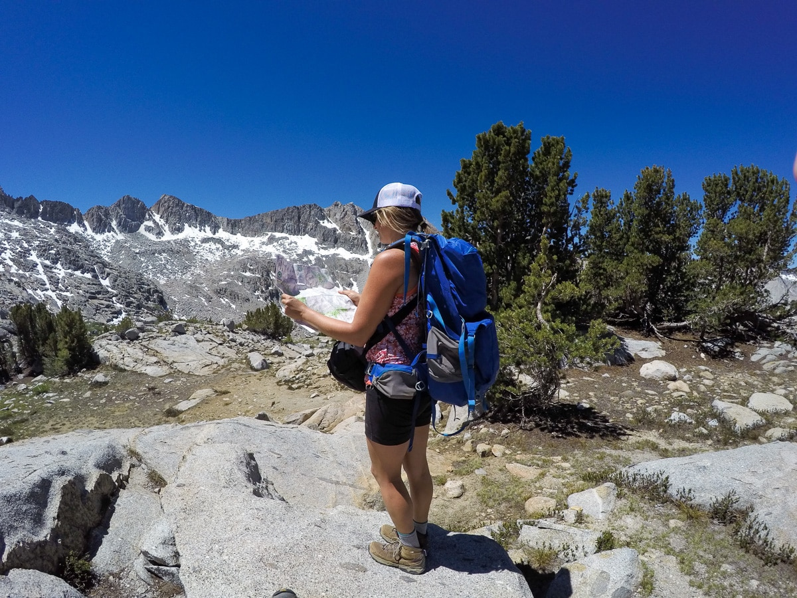

BLOG
The goal of The Broke Backpacker is to show budding adventurers how to ditch their desks, hit the road and discover the intoxicating levels of freedom that can only be found while traveling the world. We are passionate about real adventures in far flung lands. We live for raw, challenging travel that pushes you out of your comfort zone and helps truly change your life…
 Bearfoot TheoryBackpacking trips are a great way to escape from the hustle and bustle, and here we share our favorite backpacking tips, trips, and gear. Don’t worry if you’re just starting out, our backpacking blog posts will prepare you to plan an incredible wilderness backpacking trip.
Backcountry CowHi, I'm Alice, an outdoor and adventure addict, and thanks for stopping by! I'm a California-native who blogs about backpacking, hiking, outdoor travel, and just about anyplace that makes me smile. I hope you find something useful, or at least get some inspiration to plan your own adventure!